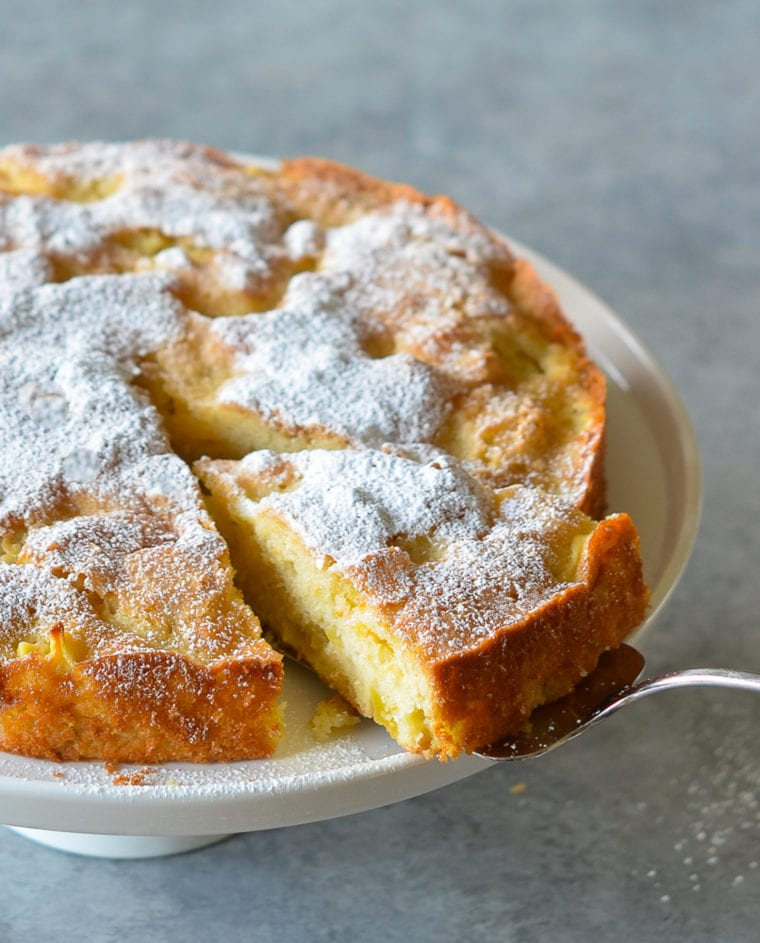

French Apple Cake Recipe

With chunks of sweet apples nestled in a tender and buttery rum cake, this
French apple cake is the essence of simplicity.
Ingredientsfor 6-8 servings
- 125 g all-purpose flour, spooned into measuring cup and leveled-off
- 1 teaspoon baking powder
- ¼ teaspoon salt
- 113 g unsalted butter, at room temperature
- 130 g granulated sugar, plus more for sprinkling over cake
- 2 large eggs
- 1 teaspoon vanilla extract
- 3 tablespoons dark rum
- 2 baking apples, peeled, cored and cut into 1.5 cm cubes (I like Honeycrisp,
Fuji or Granny Smith) (3½ - 4 cups chopped)
- Optional: Confectioners' sugar, for decorating cake
Preparation
- Preheat the oven to 175°C and set an oven rack in the middle position.
Grease a 23-cm springform or regular cake pan with butter or nonstick
cooking spray. If using a regular cake pan, line the bottom of the pan
with parchment paper and grease again.
- In a small bowl, whisk together the flour, baking powder and salt.
- Using a handheld mixer with beaters or a stand mixer with the paddle
attachment, cream the butter and granulated sugar until light and fluffy,
about 3 minutes. Add the eggs, one at a time, beating well and scraping
down the sides of the bowl after each addition.
- Beat in the vanilla and rum. Don't worry if the batter looks grainy at
this point; that's okay. Add the flour mixture and mix on low speed until
just combined. Using a rubber spatula, fold in the chopped apples.
- Scrape the batter into the prepared pan and even the top. Sprinkle evenly
with 1 tablespoon of granulated sugar. Bake for about 40 minutes, or
until the cake is golden and a toothpick inserted into the center comes
out clean.
- Allow the cake to cool on a rack in the pan. Once cool, run a blunt knife
around the edges of the cake. If using a springform pan, remove the sides.
If using a regular cake pan, carefully invert the cake onto the rack,
remove the parchment paper, then gently flip the cake over and place
right-side-up on a platter.
- Using a fine sieve, dust with confectioners' sugar (if using).
Cake can be served warm or room temperature, plain or with lightly
sweetened whipped cream or vanilla ice cream.
- Freezer Friendly Instructions: The cake can be frozen for up to
3 months. After it is completely cooled, wrap it tightly with aluminum
foil or freezer wrap. Thaw overnight on the countertop before serving.